This document provides the theoretical background to oomph-lib's solid mechanics capabilities. We start with a review of the relevant theory to establish the overall framework and notation, and then discuss the implementation of the methodology in oomph-lib.
Here is an overview of the structure of this document:
- Theory
- Solid mechanics problems – Lagrangian coordinates
- The geometry
- Equilibrium and the Principle of Virtual Displacements
- Constitutive Equations for Purely Elastic Behaviour
- Non-dimensionalisation
- 2D problems: Plane strain.
- Isotropic growth.
- Specialisation to a Cartesian basis and finite element discretisation
- Implementation
- Timestepping and the generation of initial conditions for solid mechanics problems
If you're not keen on theory, you may prefer to start by exploring the solid mechanics tutorials in oomph-lib's list of example driver codes.
Theory
Solid mechanics problems – Lagrangian coordinates
All problems discussed so far were formulated in an Eulerian frame, i.e. we assumed all unknowns to be functions of the spatially-fixed, Eulerian coordinates, 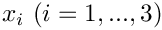, and of time,  . Many problems in solid mechanics are formulated more conveniently in terms of body-attached, Lagrangian coordinates. In this section we will briefly review the essential concepts of nonlinear continuum mechanics and present the principle of virtual displacements which forms the basis for all large-displacement solid mechanics computations in
. Many problems in solid mechanics are formulated more conveniently in terms of body-attached, Lagrangian coordinates. In this section we will briefly review the essential concepts of nonlinear continuum mechanics and present the principle of virtual displacements which forms the basis for all large-displacement solid mechanics computations in oomph-lib.
Throughout this section we will use the summation convention that repeated indices are to be summed over the range of the three spatial coordinates and all free indices range from 1 to 3. We will retain the summation signs for all other sums, such as sums over the nodes etc.
The geometry
The figure below introduces the essential geometrical concepts: We employ a set of Lagrangian coordinates,  , to parametrise the (Eulerian) position vector to material points in the body's undeformed position:
, to parametrise the (Eulerian) position vector to material points in the body's undeformed position:
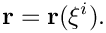
The specific choice of the Lagrangian coordinates is irrelevant for the subsequent development. For analytical studies, it is advantageous to choose a body-fitted Lagrangian coordinate system (as shown in the sketch) because this allows boundary conditions to be applied on iso-levels of the coordinates; in computational studies, it is usually preferable to use a coordinate system in which the governing equations are as compact as possible. A Cartesian coordinate system is best suited for this purpose.
We denote the tangent vectors to the coordinate lines 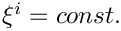 in the undeformed configuration by
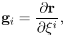
and define the components of the covariant metric tensor via the inner products
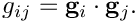
This tensor defines the "metric" because the (square of the) infinitesimal length,  , of a line element with coordinate increments 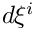 is given by
, of a line element with coordinate increments 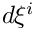 is given by
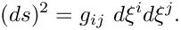
The volume of the infinitesimal parallelepiped formed by the coordinate increments is given by
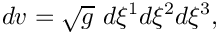
where
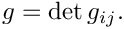

As the body deforms, the Lagrangian coordinates remain "attached" to the same material points. The body's deformation can therefore be described by the vector field that specifies the position vectors to material particles in the deformed configuration,
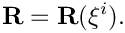
As in the undeformed coordinate system, we form the tangent vectors to the deformed coordinate lines and denote them by
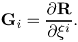
The inner product of these vectors defines the metric tensor in the deformed configuration
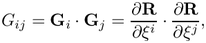
and we have equivalent relations for the lengths of line elements,
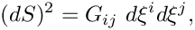
and the volume of infinitesimal parallelepipeds,
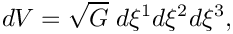
where
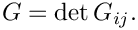
Since the metric tensors  and 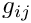 provide a measure of the length of material line elements in the deformed and undeformed configurations, respectively, their difference
and 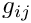 provide a measure of the length of material line elements in the deformed and undeformed configurations, respectively, their difference
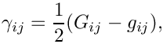
provides an objective measure of the strain and is known as the Green strain tensor.
Equilibrium and the Principle of Virtual Displacements
Let us now assume that the body is subjected to
- an applied surface traction 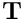 – a force per unit deformed surface area, applied on (part of) the body's deformed surface area 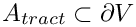,
- a body force 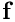 – a force per unit volume of the undeformed (!) body [This can easily be expressed in terms of a force per unit deformed volume, 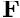, by invoking conservation of mass, which shows that 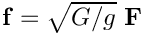.],
and its displacements are prescribed on the remaining part of the boundary, 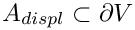 (where 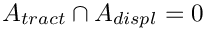 and 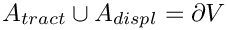 ), i.e.
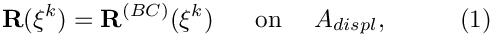
for given 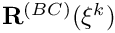.
The deformation is governed by the principle of virtual displacements
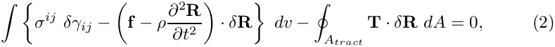
where 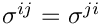 is the (symmetric) second Piola-Kirchhoff stress tensor,  is the density of the undeformed body, and 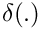 represents the variation of 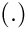. See, e.g., Green, A.E. & Zerna, W. "Theoretical Elasticity", Dover (1992); or Wempner, G. "Mechanics of Solids with Applications
to Thin Bodies", Kluwer (1982) for more details.
is the density of the undeformed body, and 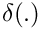 represents the variation of 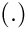. See, e.g., Green, A.E. & Zerna, W. "Theoretical Elasticity", Dover (1992); or Wempner, G. "Mechanics of Solids with Applications
to Thin Bodies", Kluwer (1982) for more details.
Upon choosing the particles' position vector in the deformed configuration,  , as the unknown, the variation of the strain tensor becomes
, as the unknown, the variation of the strain tensor becomes
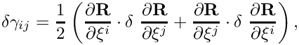
and we have
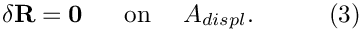
The 2nd Piola Kirchhoff stress tensor is symmetric, therefore we can write the variation of the strain energy in (2) as
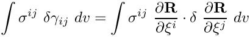
and obtain the displacement form of the principle of virtual displacements:
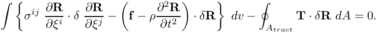
This must be augmented by a constitutive equation which determines the stress as a function of the body's deformation, (and possibly the history of its deformation). Here we will only consider elastic behaviour, where the stress is only a function of the strain.
Constitutive Equations for Purely Elastic Behaviour
For purely elastic behaviour, the stress is only a function of the instantaneous, local strain and the constitutive equation has the form
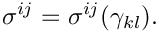
The functional form of the constitutive equation is different for compressible/incompressible/near-incompressible behaviour:
- Compressible Behaviour:
If the material is compressible, the stress can be computed directly from the deformed and undeformed metric tensors,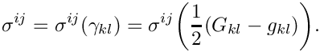
- Incompressible Behaviour:
If the material is incompressible, its deformation is constrained by the condition that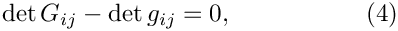
which ensures that the volume of infinitesimal material elements remains constant during the deformation. This condition is typically enforced by a Lagrange multiplier which plays the role of a pressure. In such cases, the stress tensor has the form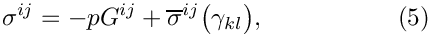
where only the deviatoric part of the stress tensor, 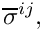 depends directly on the strain. The pressure 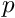 must be determined independently by enforcing the incompressibility constraint (4). Given the deformed and undeformed metric tensors, the computation of the stress tensor 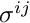 for an incompressible material therefore requires the computation of the following quantities:- The deviatoric stress

- The contravariant deformed metric tensor 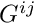
- The determinant of the deformed metric tensor
 which is required in equation (4) whose solution determines the pressure.
which is required in equation (4) whose solution determines the pressure.
- The deviatoric stress
- Nearly Incompressible Behaviour:
If the material is nearly incompressible, it is advantageous to split the stress into its deviatoric and hydrostatic parts by writing the constitutive law in the form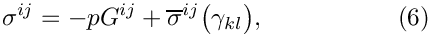
where the deviatoric part of the stress tensor, depends on the strain. This form of the constitutive law is identical to that of the incompressible case and it involves a pressure which must be determined from an additional equation. In the incompressible case, this equation was given by the incompressibility constraint (4). Here, we must augment the constitutive law for the deviatoric stress by an additional equation for the pressure. Generally this takes the form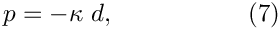
where is the "bulk modulus", a material property that must be specified by the constitutive law.
is the "bulk modulus", a material property that must be specified by the constitutive law.
 is the (generalised) dilatation, i.e. the relative change in the volume of an infinitesimal material element (or some suitable generalised quantity that is related to it). As the material approaches incompressibility, 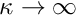, so that infinitely large pressures would be required to achieve any change in volume. To facilitate the implementation of (7) as the equation for the pressure, we re-write it in the form
is the (generalised) dilatation, i.e. the relative change in the volume of an infinitesimal material element (or some suitable generalised quantity that is related to it). As the material approaches incompressibility, 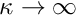, so that infinitely large pressures would be required to achieve any change in volume. To facilitate the implementation of (7) as the equation for the pressure, we re-write it in the form 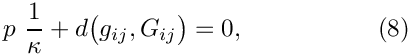
which only involves quantities that remain finite as we approach true incompressibility.
Given the deformed and undeformed metric tensors, the computation of the stress tensor for a nearly incompressible material therefore requires the computation of the following quantities:- The deviatoric stress
- The contravariant deformed metric tensor
- The generalised dilatation
- The inverse of the bulk modulus
ConstitutiveLawprovides interfaces for the computation of the stress in all three forms. - The deviatoric stress
Strain-energy functions
A hyperelastic material is one for which the stress can be derived from a potential function 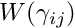, known as the strain-energy function, and
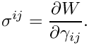
A strain-energy function exists if the elastic deformations are reversible and isothermal, or reversible and isentropic. If the material is homogeneous and isotropic then the strain-energy function depends only on the three strain invariants:
and can be written  . It may be shown, see Green & Zerna, that
. It may be shown, see Green & Zerna, that
where
The abstract base class StrainEnergyFunction provides the interfaces and and should be used as the base class for all strain-energy functions. A class StrainEnergyFunctionConstitutiveLaw that inherits from ConstitutiveLaw uses a specified strain-energy function to compute the appropriate stresses.
Non-dimensionalisation
The principle of virtual displacements (2) is written in dimensional form. We generally prefer to work with non-dimensional quantities and will now discuss the non-dimensionalisation used in the actual implementation of the equations in oomph-lib. For this purpose we first re-write equation (2) as
where we have used asterisks to label those dimensional quantities that will have non-dimensional equivalents. (Some quantities, such as the strain, are already dimensionless, while others, such as the density will not have any non-dimensional counterparts. We do not introduce modifiers for these).
We now non-dimensionalise all lengths with a problem-specific length-scale,  , given e.g. the length of the solid body, so that
, given e.g. the length of the solid body, so that
We use a characteristic stiffness, , (e.g. the material's Young's modulus  ) to non-dimensionalise the stress and the loads as
) to non-dimensionalise the stress and the loads as
and we non-dimensionalise time with a problem-specific timescale  (e.g. the period of some external forcing), so that
(e.g. the period of some external forcing), so that
This transforms (9) into
![\[ \int_{v} \left\{ \sigma^{ij} \ \delta \gamma_{ij} - \left( {\bf f} - \Lambda^2 \frac{\partial^2 {\bf R}}{\partial t^{2}} \right) \cdot \delta {\bf R} \right\} \ dv -\oint_{A_{tract}} {\bf T} \cdot \delta {\bf R} \ dA =0, \ \ \ \ \ \ \ \ (10) \]](form_73.png)
where
is the ratio of system's "intrinsic" timescale, to the time,  , used in the non-dimensionalisation of the equations. If a given problem has no externally imposed timescale (e.g. in the free vibrations of an elastic body) (or some suitable problem-dependent multiple thereof) provides a natural timescale for the non-dimensionalisation. Therefore we use as the default value in all solid mechanics equations. If preferred, computations can, of course, be performed with dimensional units, provided all quantities are expressed in consistent units (e.g. from the SI system). In this case
, used in the non-dimensionalisation of the equations. If a given problem has no externally imposed timescale (e.g. in the free vibrations of an elastic body) (or some suitable problem-dependent multiple thereof) provides a natural timescale for the non-dimensionalisation. Therefore we use as the default value in all solid mechanics equations. If preferred, computations can, of course, be performed with dimensional units, provided all quantities are expressed in consistent units (e.g. from the SI system). In this case  represents the dimensional density of the material.
represents the dimensional density of the material.
We adopt a similar approach for non-dimensionalisation of the constitutive equations. Typically, the constitutive parameters (e.g. Young's modulus and Poisson's ratio for a Hookean constitutive equation) are passed to the ConstitutiveLaw as arguments to its constructor. Where possible, we select one of these parameters as the reference stress  and give it a default value of 1.0. Hence, if a Hookean constitutive law is instantiated with just one argument (the Poisson ratio
and give it a default value of 1.0. Hence, if a Hookean constitutive law is instantiated with just one argument (the Poisson ratio  ), the stress is assumed to have been scaled on Young's modulus. If two arguments are provided, the second argument should be interpreted as the ratio of the material's Young's modulus to the reference stress used in the non-dimensionalisation of the equations.
), the stress is assumed to have been scaled on Young's modulus. If two arguments are provided, the second argument should be interpreted as the ratio of the material's Young's modulus to the reference stress used in the non-dimensionalisation of the equations.
2D problems: Plane strain.
Many solid mechanics problems can be regarded as two-dimensional in the sense that the quantities of interest only depend on two spatial coordinates. In such problems it is important to consider what constraints the system is subjected to in the third direction — clearly all real solid bodies are three-dimensional! In plane strain problems, the displacements of material points are assumed to be parallel to the 2D plane spanned by the coordinates  and
and  , so that any displacements normal to this plane are suppressed. In this case, significant transverse stresses can develop. Conversely, in plane stress problems, it is assumed that no stresses develop in the transverse direction; in this case we must allow material particles to be displaced transversely. Since we have formulated our problem in terms of positions (i.e. in terms of the displacement of material points), our formulation naturally produces a plane strain problem if we reduce the equations to two dimensions: We assume that the transverse displacement vanishes, while the remaining (in-plane) displacements are only functions of the in-plane coordinates,
, so that any displacements normal to this plane are suppressed. In this case, significant transverse stresses can develop. Conversely, in plane stress problems, it is assumed that no stresses develop in the transverse direction; in this case we must allow material particles to be displaced transversely. Since we have formulated our problem in terms of positions (i.e. in terms of the displacement of material points), our formulation naturally produces a plane strain problem if we reduce the equations to two dimensions: We assume that the transverse displacement vanishes, while the remaining (in-plane) displacements are only functions of the in-plane coordinates,  and .
and .
It is important to remember that the 2D version of all equations must produce plane-strain behaviour when new, strain-energy-based constitutive equation classes are formulated; when implementing such strain-energy functions, recall that any invariants of metric tensors etc. are the invariants of the full 3D quantities which are not necessarily the same as those of the corresponding 2D quantities.
Isotropic growth.
Many biological tissues undergo growth processes. For instance, the cells that make up a solid tumour divide regularly and as a result the total mass of the tumour increases. If the growth occurs non-uniformly so that certain parts of the tumour grow faster than others, regions that grow more slowly restrain the expansion of their neighbours. This process can induce significant growth stresses. The scenario is similar (but not identical) to that of thermal growth in which a non-uniform temperature distribution in a body creates thermal stresses. (The important difference between these two cases is that in the latter process mass is conserved – thermal expansion only leads to an increase in the volume occupied by the material, whereas biological growth via cell division increases the mass of the tumour).
It is easy to incorporate such growth processes into our theoretical framework. The general idea is sketched in the following figures:

The individual infinitesimal material elements have expanded (or contracted) isotropically and the elements are in a stress-free state. The isotropic growth is spatially uniform – all elements have expanded (or contracted) by the same amount. | All infinitesimal material elements have expanded (or contracted) isotropically and the elements are in a stress-free state. The isotropic growth is spatially non-uniform, so individual elements have grown (or contracted) by different amounts. |

Since the isotropically-grown infinitesimal material elements have grown (or contracted) by the same amount, they can be (re-)assembled to form a continuous, stress-free body. | 
Since the individual material elements have grown (or contracted) by different amounts they can (in general) not be (re-)assembled to form a continuous body without undergoing some deformation. The deformation of the material elements (relative to their stress-free shape in the hypothetical, stress-free state N1) induces internal stresses – the so-called growth-stresses. |

When subjected to external tractions and to body forces, the uniformly-grown material elements deform. Their deformation (relative to their stress-free shape in state U1 (or, equivalently, U2), generates internal stresses which
| When subjected to external tractions and to body forces, the material elements deform further. Their deformation (relative to their stress-free shape in state N1), generates internal stresses which
|
We start our analysis with the stress-free (and "ungrown") reference configuration "0" at the top of the diagram, and initially follow the deformation shown in the left half of the sketch. In a first step, each infinitesimal material element in the body is subjected to the same isotropic growth which changes its mass from to . Assuming that the growth process does not change the density of the material,  also specifies the volumetric growth of the material. All material elements grow by the same amount, therefore the individual elements can be (re-)assembled to form a continuous body (state U2). In this state, the body is stress-free and, compared to the reference configuration "0", all lengths have increased by a factor of where is the body's spatial dimension (i.e. in the sketch above). The covariant basis vectors in this uniformly-grown, stress-free configuration are therefore given by
also specifies the volumetric growth of the material. All material elements grow by the same amount, therefore the individual elements can be (re-)assembled to form a continuous body (state U2). In this state, the body is stress-free and, compared to the reference configuration "0", all lengths have increased by a factor of where is the body's spatial dimension (i.e. in the sketch above). The covariant basis vectors in this uniformly-grown, stress-free configuration are therefore given by
the metric tensor is given by
and the volume of an infinitesimal material element has increased from
to
We now subject the stress-free, uniformly-grown body to external loads and determine its deformation, using the principle of virtual displacements. Since the uniformly grown state "U2" is stress-free, we may regard it as the reference state for the subsequent deformation. The strain tensor that describes the deformation from the stress-free (and uniformly-grown) state "U2" to the final equilibrium configuration "UE" must therefore be defined as
Equations (11) and (12) allow us to express the principle of virtual displacements in terms of
- the metric of the undeformed (and un-grown) reference state "0",
- the volumetric growth
 , and
, and - quantities associated with the final deformed configuration "UE":
Note that this equation does not contain any references to quantities in the intermediate states "U1" and "U2".
We will now consider the case of spatially non-uniform growth, illustrated in the right half of the sketch. If the isotropic growth is spatially non-uniform, , the growth will try to expand all infinitesimal material elements isotropically – but each one by a different amount as illustrated by the hypothetical state N1 in which each material element has expanded to its stress-free state in which its metric tensor is given by
Material elements will only be stress-free if the strain
relative to their isotropically grown shape in state N1 is zero. In general, the displacements induced by such an isotropic expansion will be incompatible and it would be impossible to (re-)assemble the individually grown material elements to a continuous body unless the material elements undergo some deformation. The elements' deformation relative to their stress-free shape in N1 will generate internal "growth-stresses" (stage N2). When subjected to external loads and body forces the body will undergo further deformations until the the stress (generated by the particles' total deformation relative to their stress-free state N1) balances the applied loads.
It is important to realise that, as in the case of spatially uniform growth, the strain defined by (12) is an intrinsic quantity that provides a measure of each particles' local deformation relative to its stress-free shape in N1. The intermediate (and in the current case hypothetical), isotropically grown state N1 does not appear in the analysis – it only serves to define the stress-free shape for each infinitesimal material element. Equation (13) therefore remains valid.
Specialisation to a Cartesian basis and finite element discretisation
If the problem does not have any symmetries (e.g. axisymmetry) whose exploitation would reduce the spatial dimension of the problem, the most compact form of the equations is obtained by resolving all vectors into a fixed Cartesian basis so that the undeformed position vector is given by
where the are the basis vectors in the direction of the Cartesian Eulerian coordinate axes.
Similarly, we write
and
We use the Eulerian coordinates in the undeformed configuration as the Lagrangian coordinates so that
With this choice, the tangent vectors to the undeformed coordinate lines are the Cartesian basis vectors
and the undeformed metric tensor is the Kronecker delta (the unit matrix)
We now expand the (unknown) deformed position vector in the same basis,
and derive a finite element approximation for this vector field from the principle of virtual displacements. For this purpose we decompose the undeformed body into a number of finite elements, using the standard mesh generation process described previously. This establishes the Eulerian position of the  nodes in the body's undeformed configuration. Since the Eulerian coordinates of material points in the undeformed configuration coincide with their Lagrangian coordinates (see (16)), a finite-element representation of the Lagrangian coordinates is established by writing
nodes in the body's undeformed configuration. Since the Eulerian coordinates of material points in the undeformed configuration coincide with their Lagrangian coordinates (see (16)), a finite-element representation of the Lagrangian coordinates is established by writing
where is the  -th Lagrangian coordinate of global node
-th Lagrangian coordinate of global node  , and the
, and the  are the global finite-element shape functions. In practice, the are, of course, represented by local shape functions, , so that the Lagrangian coordinate at local coordinate in element is given by
are the global finite-element shape functions. In practice, the are, of course, represented by local shape functions, , so that the Lagrangian coordinate at local coordinate in element is given by
where we use the same notation as in the Introduction to the Finite Element Method document.
We employ the same basis functions to represent the components of the unknown vector field  , by writing
, by writing
and treat the (Eulerian) nodal positions  as the unknowns. With this discretisation, the variations in correspond to variations in the nodal positions so that
as the unknowns. With this discretisation, the variations in correspond to variations in the nodal positions so that
The principle of virtual displacement (13) therefore becomes
[Note that summation convention enforces the summation over the index  .] The displacement boundary condition (1) determines the positions of all nodes that are located on the boundary ,
.] The displacement boundary condition (1) determines the positions of all nodes that are located on the boundary ,
and equation (3) requires their variations to vanish,
The variations of all other nodal positions are arbitrary (and independent of each other), therefore the terms in the curly brackets in (18) must vanish individually. This provides one (discrete) equation for each unknown ,
These equations can again be assembled in an element-by-element fashion.
Implementation
We will now discuss how the discrete equations (19) are implemented in oomph-lib. To facilitate the analysis of multi-physics problems, we introduce generalisations of the Node, FiniteElement and Mesh classes which provide separate storage (and access functions) for all solid mechanics data. The resulting SolidFiniteElements can be used as stand-alone elements for the simulation of pure solid mechanics problems. More importantly, however, the design makes it easy to employ multiple inheritance to create more complex elements that solve the equations of solid mechanics together with any other field equations. For instance, if we combine a FiniteElement that solves the unsteady heat equation with a SolidFiniteElement that describes the elastic deformations, we obtain an element that can be used to simulate unsteady heat conduction in an elastic body that is subject to large-amplitude deformations, say. This is illustrated in one of oomph-lib's multi-physics example codes.
The SolidNode class
The SolidNode class is derived from the Node class and implements the additional functionality required for solid mechanics problems. The key new feature is that each Node must store its (fixed) Lagrangian coordinate , while its Eulerian position must be regarded as an unknown. This requires the following changes to member functions of the Node class:
- The function
Node::x(...)returns the Eulerian coordinates of theNode. Internally, this function accesses the nodal coordinates via pointers to double precision numbers. In solid mechanics problems we must be able to regard the nodal positions as unknowns. InSolidNodesthe nodal positions are therefore stored as values of a (member)Dataobject created during construction of theSolidNode. (As usual, the values can be either unknown or pinned, and can have time histories). The functiongives access to the global equation number for each nodal coordinate and, following our usual convention, the function returns the static integerSolidNode::position_eqn_number(...)Data::Is_pinned(which is set to -1) if a coordinate is pinned. - We introduce a new member function which returns the (fixed) Lagrangian coordinates of the node.SolidNode::xi(...)
- The function has the usual extensions to generalised coordinates which is required for Hermite elements and any other elements that use generalised nodal coordinates to interpolate the element's geometry.SolidNode::xi_gen(...)
- Similar to the
Datamember functionData::pin(...)which can be used to pin specific nodal values, we provide the functionwhich allows pinning of selected nodal coordinates.SolidNode:pin_position(...) - Dynamic problems require the evaluation of time-derivatives of the nodal positions, such as , see (19). These time-derivatives are evaluated by the
TimeStepperof the positionalData. By default, we use the sameTimeStepperfor the nodalDataand for the nodal positions. In multi-physics problems this may not be appropriate, however. Consider, for instance, solving an unsteady heat equation in a dynamically deforming, elastic body. In this problem the 2nd time-derivatives of the nodal position might be evaluated by aNewmarkscheme, acting on the history values of the nodal positions, whereas the time-derivatives of the temperature might be determined by aBDFscheme, operating on the history values of the nodalData. In such cases, the default assignment for the two timesteppers can be overwritten with the access functionsandNode::position_time_stepper_pt()where the latter is inherited fromNode::time_stepper_pt()Data::time_stepper_pt(). - Our implementation is based on the displacement form of the principle of virtual displacements in which the position vector in the deformed configuration is regarded as the unknown vector field. Equation (17) defines the representation of this vector field within each finite element in terms of the nodal coordinates. Some constitutive equations require the representation of additional (non-positional) variables. For instance, for incompressible (or nearly incompressible) materials, the stress contains a contribution from the (scalar) pressure field ; see the discussion of the constitutive equations above. If we choose a continuous representation for the pressure in which its value is interpolated between nodal values (as in Taylor-Hood-type elements), the nodal pressure values are stored in the "normal" nodal
Data. Similarly, the elements' internalDatais used to store any discontinuous solid pressures. - Finally,
SolidNodesoverload the functionData::assign_eqn_numbers()withwhich creates global equation numbers for all (non-pinned) positional values, and then deals with the "normal" nodalSolidNode::assign_eqn_numbers()Databy callingData::assign_eqn_numbers().
The SolidFiniteElement class
The class SolidFiniteElement is derived from FiniteElement and implements the additional functionality required for solid mechanics problems. Again, most of the additional (or revised) functionality is related to the presence of the two coordinate systems which requires the following changes to FiniteElement member functions:
- The nodes of
SolidFiniteElementsareSolidNodes, therefore we overload the functionFiniteElements::construct_node(...)to ensure that aSolidNodewith the appropriate amount of storage is built. As in the case ofFiniteElements, the required spatial dimension of the elements' constituent nodes, their number of nodal values etc. are specified via theFiniteElement's(pure) virtual member functionsFiniteElement::required_ndim(...),FiniteElement::required_nvalue(...), etc, which must be implemented for all specific elements that are derived from theSolidFiniteElementbase class. As discussed above, the constructor of theSolidNodesrequires additional parameters, such as the number of Lagrangian coordinates. These must be specified by implementingSolidFiniteElement::required_nlagrangian(...)and similar other functions. As in the case ofFiniteElements, many of these functions are already implemented as virtual (rather than pure virtual) functions which provide sensible default values. Such functions must be overloaded in specific derived elements if the default assignments are not appropriate. - The interpolation of the Eulerian coordinates, implemented in
FiniteElement::interpolated_x(...), can remain unchanged becauseNode::x(...)always returns the Eulerian nodal positions.SolidFiniteElementsprovide additional functions, such aswhich determines the interpolated Lagrangian coordinates at a specified local coordinate within the element, orSolidFiniteElement::interpolated_xi(...)andSolidFiniteElement::raw_lagrangian_position(...)which provides a wrapper for the nodal values of the Lagrangian coordinates. (The "raw" version of the function returns the Lagrangian coordinates stored at theSolidFiniteElement::lagrangian_position(...)SolidNode; the second version automatically computes the suitably constrained Lagrangian coordinates if theSolidNodeis hanging.) - The displacement form of the principle of virtual displacements (19) contains derivatives of the shape functions with respect to the Lagrangian (rather than the Eulerian) coordinates. Their computation is implemented in SolidFiniteElement::dshape_lagrangian(...)
- We have now created storage and access functions for the
Datathat represents the nodal positions. We must ensure that theseDataitems are included in the various equation numbering schemes. For this purpose we provide the functionSolidFiniteElement::assign_solid_local_eqn_numbers()which sets up the local equation numbering scheme for all solidDataassociated with an element. This function is called when the SolidFiniteElement's local equation numbers are generated. - We're done!
SolidFiniteElementsnow form a suitable basis for all elements whose deformation is determined by the equations of solid mechanics (or some variant thereof). To implement a specific solid mechanics element, we must represent its geometry, its state of stress, etc., in terms of theSolidFiniteElement'spositional and non-positionalData. This requires the specification of the shape functions and the functions that compute the element's Jacobian matrix and its residual vector – the latter implementing the element's contribution to the global residual vector defined by the discretised principle of virtual displacements, (19). As for "normal"FiniteElementsit is sensible to construct specificSolidFiniteElementsin a hierarchy which separates between the implementation of the governing equations and the representation of the element geometry. For instance, theSolidQElementfamily represents the generalisation of theQElementfamily toSolidFiniteElements, whilePVDEquationsimplement the principle of virtual displacements (19). The two are combined by multiple inheritance to form theQPVDElementclass. - The computation of the element's Jacobian matrix requires the evaluation of the derivatives of the discrete residuals (19) with respect to the unknown nodal positions, and with respect to any additional unknown solid mechanics variables (e.g. pressures). The derivatives with respect to the nodal positions result in fairly complex algebraic expressions and it is sometimes more efficient to evaluate these entries by finite differencing. By default, the derivatives are evaluated analytically using carefully optimised assembly loops, but a finite-difference-base evaluation can be activated instead; see the detailed description of the
PVDEquationsand thePVDEquationsWithPressureclasses.
The SolidMesh class
The SolidMesh class is a generalisation of the Mesh class whose key additional features are:
- It overloads the
Mesh::node_pt(...)function withwhich returns a pointer to anSolidMesh::node_pt(...)SolidNode, rather than a "normal"Node. Equivalent access functions are implemented for all otherMeshmember functions that return pointers toNodes. - We provide the function which assigns the current Eulerian coordinates of allSolidMesh::set_lagrangian_nodal_coordinates()
Nodesto their Lagrangian coordinates, thus turning the current configuration into the stress-free reference configuration. This function greatly facilitates the construction ofSolidMeshesvia inheritance from existingMeshes. If, for instance,SomeMeshis an existing, fully functionalMesh, the correspondingSolidMeshcan be constructed with a few lines of code, as in this example://=================================================================// SolidMesh version of SomeMesh//=================================================================template<class ELEMENT>class SomeSolidMesh : public virtual SomeMesh<ELEMENT>,public virtual SolidMesh{public:// Constructor: Call the constructor to the underlying Mesh// then assign the Lagrangian coordinates -- for the// PARANOID user, check that the element specified// in the template argument is derived from an// SolidFiniteElementSomeSolidMesh() : SomeMesh(){#ifdef PARANOID// Check that the element type is derived from// the SolidFiniteElement classSolidFiniteElement* el_pt=dynamic_cast<SolidFiniteElement*>(finite_element_pt(0));if (el_pt==0){cout << "Element must be derived from SolidFiniteElement " << endl;abort();}#endif// Make the current configuration the undeformed one by// setting the nodal Lagrangian coordinates to their current// Eulerian onesset_lagrangian_nodal_coordinates();}};
The SolidTractionElement class
To evaluate the load terms
in the discretised form of the variational principle (19) we employ the same strategy as for most other Neumann-type boundary conditions and attach so-called SolidTractionElements to the appropriate faces of higher-dimensional "bulk" solid mechanics elements. Our default implementation allows the load (specified by the "user" via a function pointer that is passed to the SolidTractionElements) to depend on the Eulerian and Lagrangian coordinates, and on the outer unit normal to the solid. This interface should be sufficiently general for most cases of interest. If additional dependencies are required, it is easy to create new SolidTractionElements. The use of the SolidTractionElements is demonstrated in several solid mechanics tutorials.
Timestepping and the generation of initial conditions for solid mechanics problems
In time-dependent problems, the boundary value problem defined by the variational principle (10) must be augmented by suitable initial conditions which specify the state of the system at time The initial conditions specify the initial shape of the solid body,
and its initial velocity,
where and are given. The accelerations at follow from the solution of (10) and can therefore not be enforced, unless we wish to initialise the time-stepping procedure with a known exact solution . (Only!) in this case are we allowed to assign an initial value for the acceleration via
We will assume that time-stepping is performed with the Newmark method which is our default timestepper for hyperbolic problems. In this case the time-derivatives of the nodal positions in (10) are replaced by an approximation which involves the current and three "history values" of the nodal positions. To start the time-integration, we must assign suitable values to these quantities to ensure that the initial state of the system is represented correctly.
To assign the initial values for the nodal positions, we (temporarily) remove all boundary conditions for the nodal positions and determine their initial values by solving equation (20) in its weak form,
where is the -th component of Equation (23) provides equations for the  components of the initial nodal positions, (where . To determine the initial nodal velocities, we repeat the same procedure with the prescribed velocities and solve
components of the initial nodal positions, (where . To determine the initial nodal velocities, we repeat the same procedure with the prescribed velocities and solve
for the initial nodal velocities, (where . Finally, assuming that we have an exact solution for the accelerations, we solve
for the initial nodal accelerations, (where . Having determined the nodal positions and their first and second time-derivatives at , we can use the functions Newmark::assign_initial_data_values_stage1(...) and Newmark::assign_initial_data_values_stage2(...) to compute the positional history values which ensure that the Newmark approximations for the initial velocity and acceleration are correct. This procedure is fully implemented in the function
whose arguments are:
- The pointer to the problem being solved. This is needed because the solution of equations (23) - (25) requires a temporary change to the boundary conditions and to the equation numbering scheme. Once the history values have been assigned, the original boundary conditions are restored and the equation numbers are re-generated by executing
Problem::assign_eqn_numbers(). - A pointer to the
SolidMeshon which the initial conditions are assigned. - A pointer to the
TimeStepper(which has to be a member of theNewmarkfamily). - A pointer to the "Elastic initial condition" object (discussed below).
- The initial timestep.
Here is a brief outline of the implementation: All SolidFiniteElements store a pointer to a SolidInitialCondition object. By default this pointer is set to NULL, indicating that FiniteElement::get_residual(...) should compute the residuals of the "normal" governing equations. SolidFiniteElements whose initial conditions are to be set with the above function, must re-direct the computation of the residual to
whenever the pointer to the SolidInitialCondition is non-NULL, as illustrated in this code fragment:
The SolidInitialCondition object stores a (pointer to a) GeomObject and a flag that indicates which time-derivative (0th, 1st or 2nd) of the GeomObject's position vector is to be assigned to the nodal coordinates. Based on the value of this flag, the function SolidFiniteElement::get_residuals_for_solid_ic(...), is able to compute the residuals corresponding to equations (23), (24) or (25).
This all sounds very complicated (and it is!) but luckily all the hard work has already been done and the relevant procedures are fully implemented. Hence, the actual assignment of the initial conditions is as simple as this:
If we do not know an exact solution to our problem (and in most cases we obviously won't...), we can only use the procedure described above to determine the initial nodal positions and velocities. In that case we solve the equations (19) for the remaining "history value". Since the equations (19) are linear in the accelerations, this is a linear problem whose Jacobian matrix is proportional to the mass matrix
![\[ M_{ij} = \int {\cal M} \ \psi_i \ \psi_j \ dv. \ \ \ \ \ \ \ (26) \]](form_160.png)
The procedure which determines the initial "history values" from the given initial positions and velocities while ensuring consistency with the governing equation at  is implemented in
is implemented in SolidMesh::Solid_IC_problem.set_newmark_initial_condition_consistently(...) which takes the same arguments as the function that assigns the acceleration directly, but also requires a function pointer to a "multiplier" . If there is no growth, i.e. if in (19), the multiplier is given by the timescale ratio  ; if the body is subjected to uniform isotropic growth, , the multiplier is equal to . If the wrong multiplier is specified (or if it is omitted, in which case the default value of 1.0 is used) the residuals (19) will be nonzero (or at least larger than the tolerance specified in
; if the body is subjected to uniform isotropic growth, , the multiplier is equal to . If the wrong multiplier is specified (or if it is omitted, in which case the default value of 1.0 is used) the residuals (19) will be nonzero (or at least larger than the tolerance specified in SolidICProblem). In this case a warning is issued and the code execution terminates. This behaviour can be suppressed by increasing the tolerance suitably, but you do this at your own risk!
Important: The above procedures can only handle the assignment of initial conditions in problems that are formulated in terms of displacements and do not involve any additional variables such as solid pressures. We do not believe that it is possible to implement the assignment of initial conditions for such problems without additional knowledge about the precise form of the constitutive equations. Therefore we provide a virtual function SolidFiniteElement::has_internal_solid_data() whose role it is to return a bool that indicates if a specific SolidFiniteElement stores such data. By default, the function returns false and should be overloaded in derived elements which involve unknowns that do not represent nodal positions. If the function returns true for any element that is used during the automatic assignment of initial conditions the code execution stops with an appropriate warning message.
PDF file
A pdf version of this document is available.